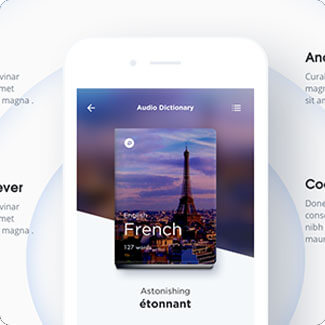

营销型呼叫中心
适用于外呼量大，想要降低通信费用，对营销外呼有通信管理需求的企业。
什么是营销型呼叫中心？
Scenes
营销型呼叫中心解决方案为企业提供一套基于PSTN网和互联网相结合的呼叫中心系统（SAAS平台），企业无须购买任何昂贵的硬件设备，只要登录呼叫中心系统平台，即可实现来电弹屏、工单管理、电话呼出等功能；满足客户在业务咨询、售后服务、数据整理、销售管理等需求。
-
01
混合云部署，提高企业数据安全
-
02
PSTN基础运营商外呼线路
-
03
套餐资费性价比高，免功能使用费
行业解决方案
SOLUTIONS
-
银行信用卡外呼中心
主要用于信用卡催收催缴、信用卡分期等相关业务。
-
保险财险和寿险电销中心
主要用于财险和寿险产品电话营销。
-
企业电销中心
用于企业自有产品，或合作产品的大规模电话外呼营销。
-
金融企业
用于企业大规模对用户进行回访和通知提醒业务，例如：金融行业需要对客户进行身份核实、提醒通知等业务。
应用场景
Scenes
本地号码全国落地（出局）
解决方案的优势
Advantage
完整的行业通信与增值业务提供一体化解决方案。电信级品质，具有高稳定大容量高可靠特点，满足运营商严苛标准。
-
外呼通信资费低
-
对电话销售的话务进行统计、录音回放管理
-
三种数据库部署方式（公有云、私有云、本地），更便捷
-
免费赠送营销管理工具
比你想象中还多的功能
More features
-
系统自动发起外呼任务，拨通以后系统自动播放IVR语音服务。应用于事务通知、事件告警。

-
预览外呼是管理人员导入客户数据后手工分配给坐席，坐席看到分配的数据后，一条一条手动点击外呼的方式。
预览外呼适合客户数据较好，精准营销的业务场景应用于：个性化外呼服务、大客户销售、客户回访。
-
预测外呼是管理员导入外呼数据后，系统发起外呼，只将接通的电话转给坐席，坐席只要示闲等待接听电话即可，提高工作效率。
预测外呼适合数据量较大，接通率不高的外呼场景；应用于外呼服务、市场调查、大批量电话销售。
-
座席可通过电话条操作：示闲、示忙、应答、挂断、呼出、保持/接回、咨询、转移、三方会议、转出等。

-

当操作外呼数据分配到座席时，该座席的电脑屏幕上会自动弹出呼出来电的用户信息，如主叫号码、用户姓名、用户类别、服务历史记录等。坐席可在弹屏界面中新增或修改客户资料信息。
-
坐席可以查询自己的工单记录和调听对应的电话录音、也可以修改自己的工单，管理工单数据，导出外呼工单明细数据。

-
提供单条增加、批量导入、单条删除、批量删除、导出、修改等数据管理功能。
-
坐席可以查询自己的外呼话单明细和调听电话接通的录音。

-
班组长或质检可以监控对应监控组中的坐席状态，对通话中的坐席进行监听、强插、拦截等监控操作。

-
包含座席评分，数据记录，共享录音数据，便于坐席查询学习。
-
根据权限分别可以查询各自的统计报表：坐席呼叫情况及呼叫数、接通率/日报、周报、呼入呼出报表等。